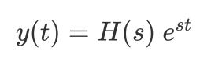
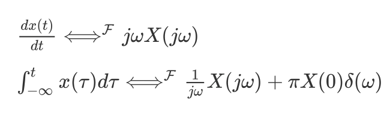
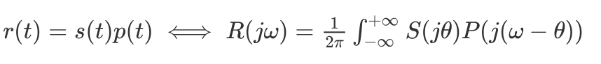

这学期数字信号处理主要讲授以奥本海姆所著的《信号与系统的》前七章：信号与系统，线性时不变系统，周期信号的傅立叶级数表示，连续时间傅立叶变换，离散时间傅立叶变换，信号与系统的时域和频域特性，采样这七个章节的内容。以及胡广书所著《数字信号处理》的第三章-离散时间信号的傅立叶变换及DFT 第七、八章-无限、有限冲激响应数字滤波器的设计，第十章-平稳随机信号的内容。
信号：
在数学上信号可以表示为变量的函数，而它的物理意义是描述一些范围很广的物理现象，它所包含的信息总是蕴含在某种变化形式的波当中。信号分为连续时间信号和离散时间信号，通常以t表示连续时间变量，以n表示离散时间变量，计算机只能处理离散时间信号，通过之后的学习了解到，基于采样定理我们可以先把一个连续时间信号变换成离散时间信号，然后利用计算机来处理离散时间信号，最后再把它变换回连续时间系统中，简称C/D转换和D/C转换。
单位冲激和单位阶跃是两个最基本的信号，我们可以利用单位冲激信号来构成和表示其他信号。
系统：
系统可以看成处理信号的过程，处理连续时间信号的就是连续时间系统，处理离散时间信号的就是离散时间系统，不同的系统具有不同的性质，我们主要讨论的是线性时不变系统，它具有一个很好的性质是叠加性。
线性时不变系统：
为什么线性时不变系统很重要？第一，它非常简单，可以对它进行详细的分析；第二，很多物理过程都具有这样的性质。
如果能将线性时不变系统的输入用一组基本信号的线性组合来表示，那么根据该系统对这些基本信号的响应，利用叠加性质可以求出系统的输出。
而一般信号都可以表示成单位冲激信号的线性组合，根据叠加性质和时不变性，我们能够用线性时不变系统的单位冲激响应来表征任意一个线性时不变系统的特性。
离散时间的线性时不变系统的响应可以用卷积和来表示，连续时间的线性时不变系统的响应可以用卷积积分来表示。

我们可以用线性常系数微分方程来描述连续时间系统，用线性常系数差分方程来描述离散时间系统。对于微分方程描述的系统，我们通常采用初始松弛条件，这可以保证系统是时不变和因果的，而微分方程又保证了它是线性的。
周期信号的傅立叶级数表示：
将周期信号表示成傅立叶级数可以让它更便于分析，因为一个复指数信号的响应仍然是一个复指数信号，不同的只是幅度上的变化。比如一个单位冲激响应为h(t)的线性时不变系统，若 $x(t) = e^{st}$, 那么系统对 x(t) 的响应 y(t) 为：

其中 H(s) 为：
对于离散时间线性时不变系统，也有类似的性质。
若一个连续时间系统的输入可以表示成复指数的线性组合
那么输出就是：
那么接下来的问题是，有多大范围内的信号可以用复指数的线性组合来表示呢？对于连续时间周期信号来说，若它满足狄利克雷条件，则可以用傅立叶级数表示，而自然界中大多数信号都是满足狄利克雷条件的。在不连续点处会产生吉布斯现象，呈现高频起伏和超量。
周期连续信号的傅立叶级数可以表示为：
周期离散信号的傅立叶级数（DFT）可以表示为：
但是 DFT 的计算量非常巨大，利用DFT 的周期性，对称性和正交性，我们可以得出快速傅立叶变换（FFT），大大降低了计算量，这一发现也是数字信号处理发展史上的转折点。
这一章也介绍了一些滤波，滤波用于改变一个信号中各频率分量的相对大小，用于改变频谱形状的线性时不变系统被称为频率成形滤波器，而通过某些频率，显著的衰减掉另一些频率的系统被称为频率选择性滤波器。
连续时间傅立叶变换：
非周期信号也可以用复指数的线性组合来表示，它们在频率上是无限小的靠近的。非周期信号可以看成周期无限长的周期信号，在一个周期信号的傅立叶级数表示中，当周期增加时，基波频率就会减小，当周期趋于无穷大时，成谐波关系的各分量在频率上就是连续的，傅立叶级数的求和也就变成了积分
上式称为傅立叶变换和傅立叶逆变换，X(jw) 称为 x(t) 的频谱，它告诉我们将x(t) 表示为不同频率正弦信号的线性组合所需要的信息。
周期信号也可以建立傅立叶变换，这样就可以在统一框架内考虑周期信号和非周期信号。
傅立叶变换具有一些很好的性质，线性性质，时移性质，共轭对称性等等，它的微分与积分性质，在求解常微分方程上很有帮助

最重要的要属卷积性质，两个傅立叶信号的卷积映射为其傅立叶变换的乘积，时域的卷积对应频域的乘积
单位冲激响应的傅立叶变换 H(jw) 控制在每一频率输入傅立叶变换振幅的变化，可以通过这一性质来衰减一些频率分量同时保留另一些频率分量。
相对地，时域的相乘对应着频域的卷积

可以理解用一个信号去调制另一个信号的振幅，因此两个信号相乘也称为幅度调制，可以用它实现中心频率可调的频率选择性带通滤波器。
离散时间傅立叶变换：
离散时间的傅立叶变换与连续时间傅立叶变换有很多相似之处，我们可以按照与连续时间傅立叶变换相平行的做法来分析离散时间的傅立叶变换的性质。
离散时间傅立叶变换与逆变换
X[jw] 称为x[n] 的频谱，它描述了 x[n] 是怎样由这些不同的频率的复指数序列组成的。
离散周期信号也可以建立傅立叶变换：
离散傅立叶变换也具有一些性质如线性性质，时移性质，共轭对称性等，但它对 w 来说总是周期的，周期为 2 。
同样的，它也具有卷积性质：
相乘性质：
信号与系统的时域和频域特性：
在系统设计中，将时域特性和频域特性联系起来并权衡考虑是很必要的。
傅立叶变换是复数值，我们可以用模-相位表示，模所描述的是组成 x(t) 的各复指数信号相对振幅信息，而相位角不影响各个频率分量的大小，提供的是有关这些复指数信号的相对相位信息，一般来说，相位函数的变化会导致 x(t) 的时域特性的改变。
对于一个频率响应为 H(jw) 线性时不变系统，输出的傅立叶变换的模为输入傅立叶变换模乘以频率响应的模，同时在输入相位 的基础上增加了一个相位 。
通常用对数尺度来描述傅立叶变换的模
一般采用的对数标尺是以 20 为单位，称为分贝。
理想的低通滤波器固然很好，它具有极好的频率选择特性，但是它的阶跃响应在跳变点附近呈现的振荡和超量不是我们想要的，而且它是非因果的，并且复杂程度和付出的代价较高，因此我们需要进行一个折中，而往往在很多场合下并不需要一个特别精密的滤波器，一个简单的非理想的滤波器就足够了。
对于非理想滤波器，容许通带与阻带之间有一个渐渐的过渡性，这被称为过渡带，在阶跃响应中我们所关心的是它的上升时间，超量，振荡频率和建立时间。
由线性常微分方程描述的线性时不变系统在实际中很有用，很多物理系统都可以用这样的方程来建模，而且容易实现，而高阶系统可以由一阶和二阶系统通过级联或并联的形式来实现，因此理解一阶和二阶系统的时域和频域特性非常重要，因为比较琐碎，在此不再展开。
采样：
在一定条件下，一个连续时间信号完全可以用该信号在等时间间隔点上的样本来表示，并且通过这些样本值可以把该信号全部恢复出来，这被称为采样定理，这非常令人惊讶，它建立起了连续时间信号和离散时间信号之间的联系。利用采样先把一个连续时间信号变换为一个离散时间信号，再用一个离散时间系统对该信号进行处理，最后再把它变换回连续时间中。
采样频率必须大于 2 ，被称为奈奎斯特频率，然后通过一个理想低通滤波器就可以恢复到连续时间。如果采样频率小于2 的话，会产生混叠，最常见的一个欠采样现象就是在电影中，车子的轮子看起来在反方向旋转。
内插也是一种由样本值重建函数的过程，可以通过分段线性插值，Hermite插值等插值方法来重建函数。
从连续时间到离散时间的转换（C/D），从离散时间到连续时间的转换（D/C），实现 C/D 转换的器件被称为模拟-数字转换器（A/D），实现 D/C 转换的器件被称为数字-模拟转换器（D/A）。
一个连续时间信号，通过 A/D 转换器变为离散时间信号，然后利用离散时间系统处理这个信号并输出一个新的离散时间信号，最后通过 D/A 转换器变回到连续时间，这样就完成了连续时间信号的离散处理的完整过程。
无限、有限冲激响应数字滤波器的设计：
经典滤波器从功能上可分为四种，低通，高通，带通，带阻滤波器。当然它们每一种又有模拟滤波器和数字滤波器这两种形式。
数字滤波器在实现方法上有 IIR滤波器和FIR滤波器之分，它们的性能和设计方法截然不同，FIR 滤波器可以对给的频率的特性进行直接设计，而IIR 滤波器是利用模拟滤波器来进行设计，如butterworth滤波器，chebyshev滤波器等。并介绍了一些IIR 滤波器和 FIR 滤波器的设计函数在 matlab中的调用方法。
FIR DF的设计方法主要建立在对理想滤波器的频率特性的某种近似的基础上，这些近似方法有窗函数法。
平稳随机信号：
之前我们讨论的都是确定性信号，也就是确定性数据。与确定性信号不同，随机信号不能通过确定的数学公式来描述，也不能准确的预测，但生活中随机信号有很多，所以研究随机信号也具有重要的实际意义。
随机信号 x(t) 是依赖于时间t 的随机变量，我们可以用描述随机变量的方法描述随机信号。随机信号可以分为平稳信号和非平稳信号，平稳信号指的是均值与时间无关，自相关函数与选取起点无关的随机信号，这在时间序列与空间统计中有着严格的叙述和证明与分析。进一步来说，若一个平稳随机信号，它的所有样本函数在某一固定时刻的一阶和二阶统计特性和单一样本函数在长时间的统计特性一致，我们称之为各态历经信号，各态历经信号可以用单一的样本函数来做时间平均以求均值和自相关函数，所以在分析时比较方便，所以在实际中获得一个物理信号时往往先假定它是各态历经的，然后再验证假定的正确性。
相关函数和功率谱是描述随机信号的两个重要的特征量，可以对自相关函数进行直接估计和快速计算，可以用直接法和间接法进行功率谱估计。